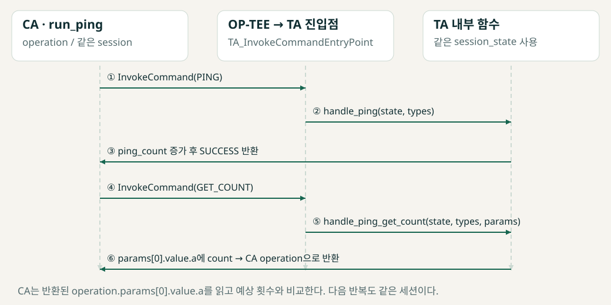

기초 기능에서 영속 키까지
코드로 따라가는 구현
문제 → 호출 흐름 → 실제 CA/TA 코드 → 검사와 자원 정리 → 실물 근거 순서로 읽습니다. 기능의 현재 구현을 설명합니다.
01 세션 상태 — 호출 사이에 무엇을 기억하는가?
문제: PING을 여러 번 호출하는 동안 카운터를 유지하고, 새 연결은 독립된 상태로 시작해야 한다.
1. CA: OpenSession2. TA: state 할당3. PING → COUNT 반복4. Close: 핸들·state 정리
CA의 TEEC_Session은 연결을 다루는 클라이언트 객체다. TA의 session_state와 멤버가 같을 필요가 없다. TA_OpenSessionEntryPoint는 할당한 구조체 주소를 *session_context에 저장한다. 이후 같은 세션의 명령이 도착하면 OP-TEE가 TA_InvokeCommandEntryPoint의 session_context 인자로 그 주소를 전달한다.

PING은 증가, GET_COUNT는 조회. 두 명령을 같은 세션에서 반복합니다.
ta/entry.c 52–60행 · 함수 원형 + 본문 발췌
TEE_Result TA_OpenSessionEntryPoint(uint32_t types, TEE_Param params[4], void **session_context);
/* 본문 일부: 앞뒤 코드는 생략 */
state = TEE_Malloc(sizeof(*state), TEE_MALLOC_FILL_ZERO);
if (state == NULL) {
return TEE_ERROR_OUT_OF_MEMORY;
}
state->hash_phase = HASH_IDLE;
state->hash_op = TEE_HANDLE_NULL;
state->signing_key = TEE_HANDLE_NULL;
*session_context = state;
ta/entry.c 91–95행 · 함수 원형 + 본문 발췌
void TA_CloseSessionEntryPoint(void *session_context);
/* 본문 일부: 앞뒤 코드는 생략 */
release_hash_operation(state);
clear_approval(state);
if (state->signing_key != TEE_HANDLE_NULL)
TEE_CloseObject(state->signing_key);
TEE_Free(state);
host/main.c 145–171행 · 함수 원형 + 본문 발췌
static int run_ping(TEEC_Session *session, const struct options *options);
/* 본문 일부: 앞뒤 코드는 생략 */
operation.paramTypes = TEEC_PARAM_TYPES(TEEC_VALUE_INOUT, TEEC_NONE,
TEEC_NONE, TEEC_NONE);
for (uint32_t loop = 0; loop < options->ping_count; loop++) {
result = invoke_command(session, TA_PORTFOLIO_CMD_PING,
&operation, "ping", &origin);
if (result != TEEC_SUCCESS) {
fprintf(stderr, "FAIL: expected result=0x%08" PRIx32 "\n",
(TEEC_Result)TEEC_SUCCESS);
return EXIT_FAILURE;
}
printf("CA : ping(%" PRIu32 ")\n", loop + 1);
result = invoke_command(session, TA_PORTFOLIO_CMD_PING_GET_COUNT,
&operation, NULL, &origin);
if (result != TEEC_SUCCESS) {
fprintf(stderr, "FAIL: GET_COUNT result=0x%08" PRIx32
" origin=0x%08" PRIx32 "\n", result, origin);
return EXIT_FAILURE;
}
if (operation.params[0].value.a != loop + 1) {
fprintf(stderr, "FAIL: expected count=%" PRIu32
", received=%" PRIu32 "\n",
loop + 1, operation.params[0].value.a);
return EXIT_FAILURE;
}
printf("TA : ping_cnt(%" PRIu32 ")\n", operation.params[0].value.a);
}
printf("PASS: %" PRIu32 " PING calls counted\n", options->ping_count);
ta/entry.c 569–572행 · 함수 원형 + 본문 발췌
TEE_Result TA_InvokeCommandEntryPoint(void *session_context, uint32_t command,
uint32_t types, TEE_Param params[4]);
/* 본문 일부: 앞뒤 코드는 생략 */
case TA_PORTFOLIO_CMD_PING:
return handle_ping(state, types);
case TA_PORTFOLIO_CMD_PING_GET_COUNT:
return handle_ping_get_count(state, types, params);
ta/entry.c 516–520행 · 함수 원형 + 본문 발췌
static TEE_Result handle_ping(struct session_state *state, uint32_t types);
/* 본문 일부: 앞뒤 코드는 생략 */
if (state->ping_count == UINT32_MAX)
return TEE_ERROR_OVERFLOW;
state->ping_count++;
return TEE_SUCCESS;
ta/entry.c 534–535행 · 함수 원형 + 본문 발췌
static TEE_Result handle_ping_get_count(struct session_state *state,
uint32_t types, TEE_Param params[4]);
/* 본문 일부: 앞뒤 코드는 생략 */
params[0].value.a = state->ping_count;
return TEE_SUCCESS;
코드를 읽는 순서
TA_InvokeCommandEntryPoint는 받은 포인터를 struct session_state *state로 사용하고, switch(command)로 명령 번호를 구분한다. 이 분기 처리를 dispatcher라고 부른다. PING이면 handle_ping(state, types)를 직접 호출하고, GET_COUNT이면 handle_ping_get_count(state, types, params)를 호출한다. 즉 OP-TEE가 호출하는 진입 함수까지만 session_context가 전달되고, 개발자가 만든 내부 함수에는 일반 C 함수 인자로 state를 직접 넘긴다.
PING은 state->ping_count를 증가시키고, GET_COUNT는 그 값을 params[0].value.a에 쓴다. CA에서는 호출이 반환된 뒤 operation.params[0].value.a를 읽는다. run_ping은 같은 세션에서 이 두 명령을 반복한다. Close에서는 해시 연산, 승인 상태, 키 핸들, 구조체를 정리한다. 키 핸들 닫기는 영속 키 삭제가 아니다.
검토할 조건
검토 지점: 할당 실패, 카운터 오버플로, 닫을 자원의 소유권. 전역 카운터와 세션별 카운터의 수명을 구분한다.
실물 확인 결과
같은 실행 4회 누적과 새 실행 1회 초기화를 확인했다.
보드에서 실행하는 명령
portfolio-hello --ping 4
portfolio-hello --ping 1
PING-4 · 실제 로그 발췌
TA : ping_cnt(1)
TA : ping_cnt(2)
TA : ping_cnt(3)
TA : ping_cnt(4)
PASS: 4 PING calls counted
process exit=0
PING-NEW · 실제 로그 발췌
TA : ping_cnt(1)
PASS: 1 PING calls counted
process exit=0
결과 보고서 · 근거 항목: PING-4, PING-NEW
↑ 목차로
02 ECHO — 버퍼의 주소·크기·소유권
문제: CA가 보낸 바이트를 안전하게 반환하려면 입력 길이와 출력 용량을 별도로 전달해야 한다.
1. CA: tmpref 주소·크기2. TA: 타입·범위 검사3. TA: 복사·실제 길이 반환4. CA: 길이·내용 비교
이 CA는 기존 입력 문자열과 스택 출력 배열을 tmpref로 전달한다. 등록형 memref.parent는 쓰지 않는다. libteec/드라이버/OP-TEE를 거치면 TA는 memref.buffer와 size로 접근한다. CA의 가상주소가 그대로 TA 주소라는 뜻은 아니다.
host/main.c 183–188행 · 함수 원형 + 본문 발췌
static int run_echo(TEEC_Session *session, const struct options *options);
/* 본문 일부: 앞뒤 코드는 생략 */
operation.paramTypes = TEEC_PARAM_TYPES(TEEC_MEMREF_TEMP_INPUT,
TEEC_MEMREF_TEMP_OUTPUT, TEEC_NONE, TEEC_NONE);
operation.params[0].tmpref.buffer = options->text;
operation.params[0].tmpref.size = input_length;
operation.params[1].tmpref.buffer = output;
operation.params[1].tmpref.size = sizeof(output);
ta/entry.c 496–504행 · 함수 원형 + 본문 발췌
static TEE_Result handle_echo(uint32_t types, TEE_Param params[4]);
/* 본문 일부: 앞뒤 코드는 생략 */
if (capacity < length) {
params[1].memref.size = length;
return TEE_ERROR_SHORT_BUFFER;
}
if (length != 0)
TEE_MemMove(params[1].memref.buffer, params[0].memref.buffer, length);
params[1].memref.size = length;
return TEE_SUCCESS;
코드를 읽는 순서
호출 전 출력 size는 용량이고 성공 후에는 실제 길이다. TA는 빌린 호출 버퍼를 TEE_Free하지 않는다. CA 배열도 malloc으로 만든 것이 아니므로 free하지 않는다. 반환 데이터는 문자열 끝의 NUL을 보장하지 않으므로, CA는 printf("%s") 대신 fwrite로 반환 길이만큼 출력한다.
검토할 조건
검토 지점: 앞선 타입 검사, 최대 16바이트 제한, 길이에 따른 NULL 검사, SHORT_BUFFER 반환. size 값만으로 호출자가 실제 할당한 크기를 알 수는 없다. 메모리 전달의 런타임 검사와 TA의 명령 형식 검사를 구분한다.
실물 확인 결과
일반·빈 입력·16바이트 ECHO를 확인했다.
보드에서 실행하는 명령
portfolio-hello --echo hello
portfolio-hello --echo ""
portfolio-hello --echo 1234567890123456
ECHO · 실제 로그 발췌
PASS: 5 ECHO bytes matched
process exit=0
ECHO-EMPTY · 실제 로그 발췌
PASS: 0 ECHO bytes matched
process exit=0
ECHO-16 · 실제 로그 발췌
PASS: 16 ECHO bytes matched
process exit=0
결과 보고서 · 근거 항목: ECHO, ECHO-EMPTY, ECHO-16
↑ 목차로
03 분할 SHA-256 — 입력이 아니라 연산 상태를 갱신한다
문제: 데이터를 나누어 보내도 이어 붙인 전체 데이터와 같은 SHA-256 결과를 얻어야 한다.
1. BEGIN: IDLE → ACTIVE2. UPDATE: 조각 입력 반복3. FINAL: 32바이트 출력4. 연산 해제 → IDLE
연산 핸들 hash_op가 이전 조각까지의 해시 계산 상태를 유지한다. TEE_DigestUpdate는 입력 버퍼를 해시값으로 바꾸지 않는다. FINAL은 누적 계산을 마무리하여 별도 출력 버퍼에 32바이트를 쓴다. 이 구현은 마지막 조각을 UPDATE로 모두 보내므로 FINAL 입력이 NULL, 0이다.
host/main.c 235–241행 · 함수 원형 + 본문 발췌
static int run_hash(TEEC_Session *session, const struct options *options);
/* 본문 일부: 앞뒤 코드는 생략 */
for (size_t offset = 0; offset < input_length; ) {
size_t remaining = input_length - offset;
size_t chunk = remaining < options->chunk_size
? remaining : options->chunk_size;
update_op.params[0].tmpref.buffer = options->text + offset;
update_op.params[0].tmpref.size = chunk;
ta/entry.c 471–476행 · 함수 원형 + 본문 발췌
static TEE_Result handle_hash_final(struct session_state *state,
uint32_t types, TEE_Param params[4]);
/* 본문 일부: 앞뒤 코드는 생략 */
result = TEE_DigestDoFinal(state->hash_op, NULL, 0,
params[0].memref.buffer, &digest_length);
params[0].memref.size = digest_length;
/* After an actual finalization attempt, require a fresh BEGIN. */
release_hash_operation(state);
return result;
코드를 읽는 순서
CA는 남은 길이와 chunk_size 중 작은 크기만 전달하고 offset을 증가시킨다. BEGIN은 중복 시작을 거부한다. UPDATE/FINAL은 ACTIVE 상태를 요구한다. FINAL의 작은 출력 버퍼 오류는 연산을 유지하지만, 실제 최종화 시도 후에는 성공 여부와 무관하게 해제한다. 세션 종료도 진행 중 연산을 정리한다.
검토할 조건
검토 지점: 포인터 이동과 남은 길이를 함께 계산하는지, 출력 32바이트 용량, 상태 전이, 실패 후 핸들 정리. 단순히 UPDATE를 여러 번 호출한다고 입력을 여러 번 별도 해시하는 것이 아니다.
실물 확인 결과
test 입력을 1·2·4바이트로 나눈 결과가 sha256sum과 같았다.
보드에서 실행하는 명령
printf %s test | sha256sum
portfolio-hello --hash test 1
portfolio-hello --hash test 2
portfolio-hello --hash test 4
HASH-1 · 실제 로그 발췌
SHA256: 9f86d081884c7d659a2feaa0c55ad015a3bf4f1b2b0b822cd15d6c15b0f00a08
process exit=0
HASH-2 · 실제 로그 발췌
SHA256: 9f86d081884c7d659a2feaa0c55ad015a3bf4f1b2b0b822cd15d6c15b0f00a08
process exit=0
HASH-4 · 실제 로그 발췌
SHA256: 9f86d081884c7d659a2feaa0c55ad015a3bf4f1b2b0b822cd15d6c15b0f00a08
process exit=0
결과 보고서 · 근거 항목: HASH-1, HASH-2, HASH-4
↑ 목차로
04 RSA 서명 — TA 개인키와 CA 공개키 검증
문제: 개인키를 반환하지 않고 TA가 서명하며, CA가 데이터와 서명의 일치를 확인해야 한다.
1. TA: RSA-2048 키 생성2. CA: n/e로 공개키 구성3. TA: 승인된 해시 서명4. CA: 원본·변경 데이터 검증
TEE_AllocateTransientObject는 키를 담을 객체를 준비하고 TEE_GenerateKey가 키 쌍을 생성한다. 현재 구현은 이를 영속 객체로 저장한다. CA에는 공개 속성 n/e만 내보내며, BN_bin2bn → OSSL_PARAM_BLD → EVP_PKEY_fromdata로 공개키 객체를 만든다. 공개키 형식 검사와 데이터 서명 검증은 별개다.
ta/entry.c 223–232행 · 함수 원형 + 본문 발췌
static TEE_Result sign_stored_digest(struct session_state *state,
const uint8_t digest[TA_PORTFOLIO_SHA256_SIZE], void *output, size_t *output_size);
/* 본문 일부: 앞뒤 코드는 생략 */
result = TEE_AllocateOperation(&operation, TEE_ALG_RSASSA_PKCS1_V1_5_SHA256,
TEE_MODE_SIGN, TA_PORTFOLIO_RSA_BITS);
if (result != TEE_SUCCESS)
return result;
result = TEE_SetOperationKey(operation, state->signing_key);
if (result == TEE_SUCCESS)
result = TEE_AsymmetricSignDigest(operation, NULL, 0, digest,
TA_PORTFOLIO_SHA256_SIZE, output, output_size);
TEE_FreeOperation(operation);
return result;
host/main.c 352–357행 · 함수 원형 + 본문 발췌
static int verify_signature(EVP_PKEY *public_key,
const unsigned char *digest,
const unsigned char *signature, size_t signature_size);
/* 본문 일부: 앞뒤 코드는 생략 */
if (context == NULL || EVP_PKEY_verify_init(context) <= 0 ||
EVP_PKEY_CTX_set_rsa_padding(context, RSA_PKCS1_PADDING) <= 0 ||
EVP_PKEY_CTX_set_signature_md(context, EVP_sha256()) <= 0)
goto cleanup;
result = EVP_PKEY_verify(context, signature, signature_size,
digest, TA_PORTFOLIO_SHA256_SIZE);
코드를 읽는 순서
sign_stored_digest는 SHA-256 다이제스트에 RSA PKCS#1 v1.5 서명을 생성하는 내부 함수다. CA 검증에도 같은 패딩·해시 알고리즘을 지정한다. EVP_PKEY_public_check는 공개키의 수학적 유효성 확인이며 소유자 인증은 아니다. 현재 --sign도 외부 승인 흐름을 거치며 예전 직접 서명 명령은 거부한다. 승인키와 데이터 서명키는 서로 다르다.
검토할 조건
검토 지점: 생성·열기·연산 핸들 구분, 오류 경로의 자원 해제, 공개키 가져오기 실패 처리. 레시피 DEPENDS의 openssl과 CA 컴파일의 -lcrypto/-lteec를 확인했다. TA 암호 API와 CA의 OpenSSL은 다른 실행 환경이다.
실물 확인 결과
정상 승인 후 원본 서명 검증 성공과 변경 데이터 거부를 확인했다.
승인 파일 준비와 재부팅을 포함한 시험 절차를 참고하세요. 현재 승인 흐름에서는 단독 --sign 실행만으로 시험이 완료되지 않습니다.
AUTH-NORMAL · 실제 로그 발췌
PASS: challenge prepared (not authenticated)
SIGN_AUTHORIZED: result=0x00000000 origin=0x00000004
PASS: original data signature verified
PASS: altered data signature rejected
process exit=0
결과 보고서 · 근거 항목: AUTH-NORMAL
↑ 목차로
05 영속 저장 — 핸들을 닫아도 키를 지우지 않는다
문제: 세션이나 전원이 끝나도 같은 키를 사용하되, 키 생성 요청이 기존 키를 실수로 덮어쓰면 안 된다.
1. 임시 키 쌍 생성2. 영속 객체 저장3. 임시 객체 해제4. 다음 세션에서 기존 키 열기
핸들 숫자를 파일에 저장하지 않는다. TEE_CreatePersistentObject에 임시 키 객체를 속성 원본으로 전달해 키를 영속 객체로 만든다. 성공 후 임시 객체를 해제해도 저장된 키는 유지된다. 키를 다시 찾을 때는 같은 TA UUID와 Object ID를 사용한다.
ta/entry.c 124–137행 · 함수 원형 + 본문 발췌
static TEE_Result handle_key_create(struct session_state *state, uint32_t types);
/* 본문 일부: 앞뒤 코드는 생략 */
/* No OVERWRITE: an existing object must survive a repeated CREATE. */
result = TEE_CreatePersistentObject(
TEE_STORAGE_PRIVATE,
signing_key_obj_id,
sizeof(signing_key_obj_id) - 1,
TEE_DATA_FLAG_ACCESS_READ,
transient_key,
NULL,
0,
&persistent_key
);
TEE_FreeTransientObject(transient_key);
transient_key = TEE_HANDLE_NULL;
ta/entry.c 158–163행 · 함수 원형 + 본문 발췌
static TEE_Result open_signing_key(struct session_state *state);
/* 본문 일부: 앞뒤 코드는 생략 */
/* Exclusive handle for this exercise; concurrent opens may conflict. */
result = TEE_OpenPersistentObject(TEE_STORAGE_PRIVATE,
signing_key_obj_id, sizeof(signing_key_obj_id) - 1,
TEE_DATA_FLAG_ACCESS_READ, &key);
if (result != TEE_SUCCESS)
return result;
코드를 읽는 순서
생성과 열기를 분리한다. 생성에 OVERWRITE 플래그를 넣지 않아 기존 객체를 덮어쓰지 않는다. open_signing_key는 열기와 RSA 객체 종류·크기 확인을 마친 뒤에만 세션에 핸들을 저장한다. 이미 핸들이 있으면 재사용한다. 공유 플래그 없는 열기여서 동시 세션은 충돌할 수 있다. 삭제 명령은 아직 구현하지 않았다.
검토할 조건
임시 객체·영속 객체·세션 핸들의 수명을 구분하고, 열기 실패 시 자원을 닫으며 반복 생성 시 기존 키를 보존한다. /var/lib/tee 파일은 일반 평문 개인키 PEM이 아니다.
실물 확인 결과
재부팅 후 공개키 n/e가 이전 값과 같고 CA/TA 파일과 서비스가 유지됐다.
키 생성·삭제나 재부팅은 자동 실행하지 않습니다. 기존 시험 절차와 재부팅 비교 근거를 함께 읽으세요.
KEY-AFTER · 실제 로그 발췌
Compared public n/e against pre-reboot capture: MATCH
process exit=0
결과 보고서 · 근거 항목: KEY-AFTER
↑ 목차로
개발 방식과 확인 범위
개발 방식: 초기 구현·커밋 → AI 검토 → diff 확인 → 선택 반영. 타입·버퍼·값 검사 보완에 AI 도움을 받았습니다. 현재 코드의 동작을 설명하며 줄별 작성 기여를 추정하지 않습니다.
- 01 세션 상태: 동시 세션 분리, 최초 COUNT=0 직접 호출, 오버플로 경계는 미시험이다.
- 02 ECHO: 작은 출력 버퍼 재시도와 내장 NUL은 미시험이다. 기존 BAD-TYPES는 PING 시험이므로 ECHO 타입 검사 시험으로 세지 않는다. 현재 CLI는 strlen 기반이라 내장 NUL 입력을 직접 전달하지 않는다.
- 03 분할 SHA-256: 중복 BEGIN, 준비 없는 UPDATE, FINAL 중복 및 작은 버퍼 재시도는 미시험이다.
- 04 RSA 서명: 이 결과로 공개키 소유자 신원이나 키 생성 난수 품질까지 입증하지 않는다.
- 05 영속 저장: 이전 공개키 파일로 재부팅 후 서명을 독립 검증한 것은 아니다. REE FS 단조 카운터 경고와 롤백 방지는 미해결이다.
근거는 기존 실증 기록입니다. 소스 스냅샷과 설치 패키지의 빌드 입력 일치까지 확정한 것은 아닙니다.